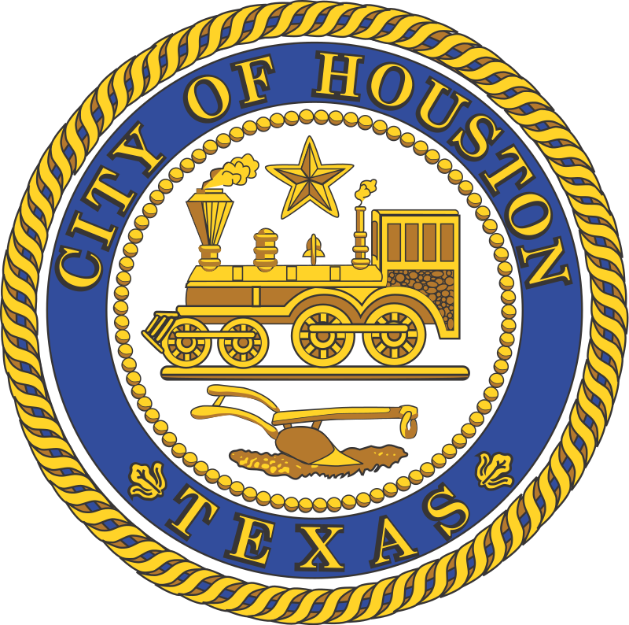

(Small) Houston
The Heart of Houston
Harris County is the heart of Houston. The county was founded in 1836 and organized in 1837. It is named for John Richardson Harris, who founded the town of Harrisburg on Buffalo Bayou in 1826.
About Harris County
Houston is a large metropolis in Texas, extending to Galveston Bay. It’s closely linked with the Space Center Houston, the coastal visitor center at NASA’s astronaut training and flight control complex. The city’s relatively compact Downtown includes the Theater District, home to the renowned Houston Grand Opera, and the Historic District, with 19th-century architecture and upscale restaurants.

Houston Facts
Home to a respected and energetic cultural arts scene, celebrated restaurants featuring flavors from more than 70 global regions, world-renowned theater groups and the brains behind U.S. space exploration, Houston is a diverse metropolis brimming with personality. This is the Culinary and Cultural Capital of the South where new experiences and adventures are right around the corner.
With the city's temperate climate, you'll want to explore the tree-lined Museum District by foot, meandering among the 19 different institutions that make this a major arts destination. Buffalo Bayou Park’s recent renovations make it an exciting place to play, whether you're looking to cycle, walk or even kayak. At nearby Hermann Park, walk under the shadows of ancient oaks, explore the lush Centennial Gardens, golf 18 holes, get wild at the Houston Zoo or catch a free show at Miller Outdoor Theatre.
In Downtown Houston, you’ll find exciting nightlife and entertainment options; from live music at hole-in-the-wall speakeasies to celebrity performers at Toyota Center, and everything in between. Catch up with friends on Main Street with an array of unique bars, or use the light rail to explore East Downtown (EaDo), Midtown and beyond.
In late 2016, the new 1,000-room Marriott Marquis opened in Downtown Houston, adding a second headquarter hotel for the George R. Brown Convention Center. Additional restaurants fill the ground floor, while guests will find the famous Texas-shaped lazy river on the open air deck, with gorgeous views of downtown. The convention center itself underwent a renovation to include four new restaurants, a first floor concourse, new art installations, and a pedestrian-friendly plaza that connects guests to activities and more at the 12-acre Discovery Green Park. The area, now called Avenida Houston, is the city's newest entertainment destination.
What guests will find outside of the convention center, is a diverse culinary scene with dozens of restaurants just a short walk away, and activities such as professional sports, concerts and more. The 17-block Theater District includes some of the world’s top performance organizations and always has something going on.
Always evolving, Houston continues to impress and inspire.
Houston Gallery
Click on the images below: